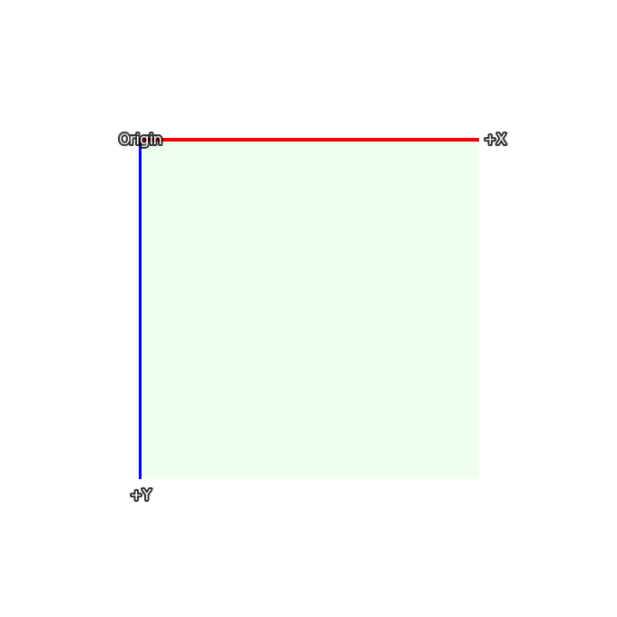
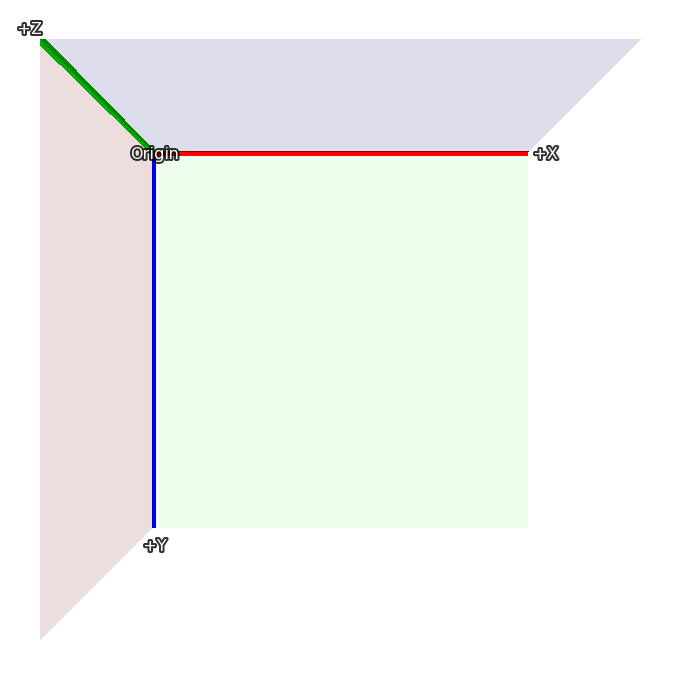
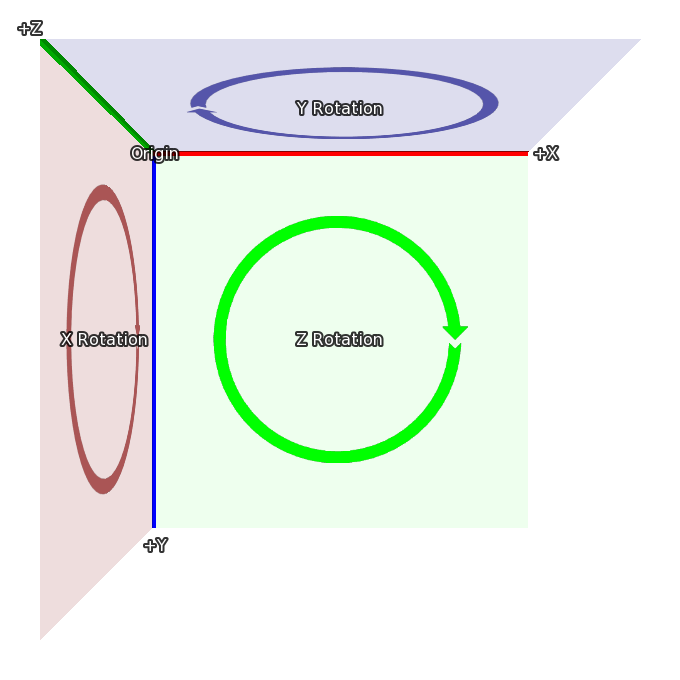

3D-сцена
3D-сцена, названная в честь театральных подмостков, на которых разыгрываются спектакли, – это концепция, позволяющая размещать отображаемые объекты в трёх измерениях. Ren'Py отрисовывает их с правильной перспективой, а также делает доступным измерение Z, что позволяет реализовать такие вещи, как освещение и рендеринг глубины.
Координаты
Вероятно, самое важное, что нужно понять о 3D-сцене, — это система координат, которую Ren'Py использует для 3D-состояния. Вот система координат, которая используется для размещения отображаемых объектов в 2D:

В 2D прямоугольник соответствует размеру экрана, а ширина и высота видимой области задаются с помощью gui.init() (обычно при создании новой игры).

3D-сцена расширяет эту систему координат новой осью, направленной к зрителю. Таким образом, значения больше 0 приближают изображение (и делают его больше), а значения меньше 0 отдаляют его от зрителя (и делают его меньше).

Наконец, когда происходит вращение в 3D, оно происходит в указанных здесь направлениях:
При вращении вокруг Z, X движется к Y.
При вращении вокруг X, Y движется к Z.
При вращении вокруг Y, Z движется к X.
Эти системы координат основаны на тех, что используются в Ren'Py, что упрощает переход от 2D к 3D-сцене. При импорте 3D-моделей могут применяться преобразования координат, чтобы обеспечить их корректность.
Камера
Начальное положение камеры контролируется параметрами gui.init(). Сначала Ren'Py использует width и fov для вычисления расстояния z по умолчанию. Для fov по умолчанию, равного 75:
Когда width = 1280, z составляет примерно 834
Когда width = 1920, z составляет примерно 1251
Когда width = 3840, z составляет примерно 2502
При этом фактическое значение z менее чем на 1 превышает приведённые здесь значения. Положение z по умолчанию можно переопределить с помощью стилевого свойства perspective или переменной config.perspective.
Ren'Py автоматически применяет к камере смещение (width / 2, height / 2, z), и она смотрит вдоль оси -Z.
Расстояние z – это также расстояние от камеры до плоскости, на которой пиксели на экране имеют тот же размер, что и в исходных изображениях (без учёта масштабирования окна). Увеличение z-позиции камеры сделает всё меньше, а уменьшение — больше.
Наконец, perspective и config.perspective описывают ближнюю и дальнюю плоскости отсечения, которые по умолчанию равны 100 и 100000 соответственно. Это означает, что если изображение находится ближе 100 z-единиц к камере, оно исчезает, а также исчезает, если оно находится на расстоянии более 100 000 z-единиц.
- define config.perspective = (100, z, 100000)
Значение по умолчанию, используемое, когда
perspectiveне задано в виде кортежа из трёх элементов.zзависит от размера игры, как описано выше.
Использование 3D-сцены
Первое, что нужно сделать для использования 3D-сцены, — это включить её для слоя с помощью оператора camera. Если имя слоя не указано, по умолчанию используется master. Обычно это делается так:
# Включение 3D-сцены для слоя master.
camera:
perspective True
хотя, возможно, вы захотите включить позицию камеры по умолчанию, как описано ниже.
Как вариант, можно указать конкретное имя слоя, чтобы включить 3D-сцену только для него.
# Включение 3D-сцены для слоя background.
camera background:
perspective True
Отображение изображений (фонов и спрайтов) работает так же, как и при использовании 2D-координат.
scene bg washington
show lucy mad at right
show eileen happy
Однако можно использовать трансформации для перемещения этих отображаемых объектов в трёхмерном пространстве:
scene bg washington:
xalign 0.5 yalign 1.0 zpos -1000
show lucy mad:
xalign 1.0 yalign 1.0 zpos 100
show eileen happy:
xalign 0.5 yalign 1.0 zpos 200
Поскольку задана ATL-трансформация, трансформация по умолчанию не используется, и необходимо указать xalign и yalign для позиционирования отображаемого объекта по осям X и Y. Конечно, можно использовать и именованные трансформации.
transform zbg:
zpos -100
transform z100:
zpos 100
transform z200:
zpos 200
scene bg washington at center, zbg
show lucy mad at right, z100
show eileen happy at center, z200
Если вы попробуете это, то увидите пустое пространство вокруг фона. Это происходит потому, что при смещении назад фон становится меньше и не заполняет весь экран. В Ren'Py есть простой способ решить эту проблему — zzoom. Установка свойства zzoom в True масштабирует изображение на величину, на которую оно было уменьшено из-за отрицательного zpos. Это полезно для фонов.
transform zbg:
zpos -100 zzoom True
Также возможно использовать ATL для изменения zpos, так же, как вы бы делали с xpos и ypos.
show eileen happy at center:
zpos 0
linear 4.0 zpos 200
Обратите внимание, что zpos может странно взаимодействовать с такими позициями, как left и right, а также со свойствами xalign и yalign. Это связано с тем, что Ren'Py располагает изображения в трёхмерном прямоугольном объёме (подобно кубу, но не все стороны имеют одинаковую длину), а затем применяет к изображению перспективу, что может привести к смещению частей изображения за пределы экрана.
Также можно перемещать камеру с помощью camera. Например,
camera:
perspective True
xpos 0
linear 3.0 xpos 500
При этом, вероятно, имеет смысл использовать фоновые изображения, размер которых превышает размер окна.
Если вы применяете zpos к спрайту, но это не даёт эффекта, причина, скорее всего, в том, что вы пропустили блок perspective в трансформации camera.
Камеру можно вращать с помощью:
camera:
perspective True
rotate 45
Поскольку вращается именно камера, вращение происходит в направлении, противоположном вращению отображаемого объекта.
Глубина
По умолчанию Ren'Py будет отображать изображения в своём обычном порядке: последнее показанное изображение будет находиться поверх остальных. Это может приводить к странным результатам, например, когда изображение, которое находится ближе (с учётом перспективы), отображается за тем, которое находится дальше.
Если ваша игра отображает изображения в неправильном порядке, вы можете указать GPU сортировать их по глубине с помощью gl_depth:
camera:
perspective True
gl_depth True
Небольшие ошибки округления могут привести к тому, что изображения, номинально находящиеся на одной и той же глубине, будут отображаться одно над другим или одно под другим. Решением этой проблемы может быть сведение этих изображений в одно и их совместное отображение.
Матричные трансформации
Ren'Py использует свойство трансформации matrixtransform для применения матрицы к отображаемым объектам, что позволяет масштабировать, смещать и вращать изображение в трёхмерном пространстве. Это свойство принимает либо Matrix(), либо TransformMatrix (определённый ниже) и применяет его к вершинам в углах отображаемых изображений.
Ren'Py использует свойство трансформации matrixanchor, чтобы упростить применение матрицы. По умолчанию оно равно (0.5, 0.5) и преобразуется в пиксельное смещение внутри трансформируемого изображения с использованием обычных правил якорей Ren'Py. (Если это целое число или absolute, оно считается количеством пикселей, в противном случае — долей от размера изображения.)
Ren'Py применяет трансформацию, сначала смещая изображение так, чтобы якорь находился в точке (0, 0, 0). Затем он применяет трансформацию и смещает изображение обратно на ту же величину. При значениях по умолчанию это означает, что матрица будет применена к центру изображения.
Например:
show eileen happy at center:
matrixtransform RotateMatrix(45, 0, 0)
Это повернёт изображение вокруг горизонтальной линии, проходящей через его центр. Верхняя часть изображения сместится назад, а нижняя — вперёд.
Матрицы можно объединять в цепочку с помощью умножения. Проще всего представлять, что они применяются справа налево. В этом примере:
show eileen happy at center:
matrixtransform RotateMatrix(45, 0, 0) * OffsetMatrix(0, -300, 0)
Изображение будет смещено вверх на 300 пикселей, а затем повёрнуто вокруг оси X.
Структурное сходство
В ATL интерполяция свойства matrixtransform требует использования объектов TransformMatrix, имеющих структурное сходство. Это означает, что должны использоваться те же типы TransformMatrix, перемноженные в том же порядке.
Например, следующий код повернёт и сместит изображение, а затем вернёт его в исходное состояние:
show eileen happy at center:
matrixtransform RotateMatrix(0, 0, 0) * OffsetMatrix(0, 0, 0)
linear 2.0 matrixtransform RotateMatrix(45, 0, 0) * OffsetMatrix(0, -300, 0)
linear 2.0 matrixtransform RotateMatrix(0, 0, 0) * OffsetMatrix(0, 0, 0)
Хотя первая установка matrixtransform может показаться излишней, она необходима для создания основы для первой линейной интерполяции. Если бы её не было, эта интерполяция была бы пропущена.
TransformMatrix
Хотя объекты Matrix подходят для статических трансформаций, они не годятся для анимации изменяющихся трансформаций. Также полезно иметь способ брать стандартные матрицы и инкапсулировать их так, чтобы их можно было параметризовать.
TransformMatrix — это базовый класс, который расширяется рядом классов, создающих матрицы. Экземпляры TransformMatrix вызываются Ren'Py и возвращают объекты Matrix. TransformMatrix хорошо интегрирован с ATL, что позволяет анимировать matrixtransform.
transform xrotate:
matrixtransform RotateMatrix(0.0, 0.0, 0.0)
linear 4.0 matrixtransform RotateMatrix(360.0, 0.0, 0.0)
repeat
Ожидается, что подклассы TransformMatrix будут реализовывать метод __call__. Этот метод принимает:
Старый объект для интерполяции. Этот объект может быть любого класса и может быть None, если старого объекта не существует.
Значение от 0.0 до 1.0, представляющее точку интерполяции. 0.0 — это полностью старый объект, а 1.0 — полностью новый объект.
Встроенные подклассы TransformMatrix
См. также
SplineMatrix, который работает с подклассами TransformMatrix.
Ниже приведён список подклассов TransformMatrix, встроенных в Ren'Py.
- class OffsetMatrix(x, y, z)
TransformMatrix, которая возвращает матрицу, смещающую вершину (vertex) на фиксированную величину.
- class RotateMatrix(x, y, z)
TransformMatrix, которая возвращает матрицу, вращающую displayable вокруг начала координат.
- x, y, z
Величина поворота вокруг начала координат, в градусах.
Повороты применяются в следующем порядке:
Поворот по часовой стрелке на x градусов в плоскости Y/Z.
Поворот по часовой стрелке на y градусов в плоскости Z/X.
Поворот по часовой стрелке на z градусов в плоскости X/Y.
- class ScaleMatrix(x, y, z)
TransformMatrix, которая возвращает матрицу, масштабирующую displayable.
- x, y, z
Коэффициент масштабирования для каждой оси.
Свойства трансформации
Следующие свойства трансформации используются 3D-сценой.
- matrixanchor
- Type:
(position, position)
- Default:
(0.5, 0.5)
Задаёт положение якоря матрицы относительно изображения. Если переменные являются float, то положение задаётся относительно размера дочернего объекта, в противном случае — в абсолютных пикселях.
Это устанавливает положение точки (0, 0, 0), к которой point_to, orientation, xrotate, yrotate, zrotate и matrixtransform применяют свои трансформации.
- point_to
- Type:
(float, float, float), Camera или None
- Default:
None
Задаёт позицию, на которую нужно указывать. Камера или трансформируемый отображаемый объект поворачиваются лицом к этой точке, даже если положение камеры или отображаемого объекта изменяется.
Если это None, вращение к точке интереса не применяется.
Если не None, то это кортеж из 3 элементов или экземпляр
Camera(). Кортеж формата (x, y, z) представляет позицию точки интереса. Экземпляр Camera означает, что нужно указывать на камеру.Обратите внимание, что point_to не обновляется автоматически. Поэтому, если вы хотите, чтобы он обновлялся, пишите так, как показано ниже:
# Эйлин всегда смотрит на камеру. show eileen happy at center: point_to Camera() 0 repeat
- class Camera(layer='master')
Экземпляры этого класса могут использоваться с point_to, чтобы указать на местоположение камеры для определённого слоя.
- layer
Имя слоя.
- orientation
- Type:
(float, float, float) или None
- Default:
None
Вращает камеру или отображаемый объект. Три значения — это вращения по осям X, Y и Z в градусах. Вращения применяются в порядке x, y, z для отображаемых объектов и в порядке z, y, x для камеры.
При использовании интерполяции с orientation, выбирается кратчайший путь между старой и новой ориентацией.
Если это None, ориентация не применяется.
- xrotate
- Type:
float или None
- Default:
None
Вращает камеру или отображаемый объект вокруг оси X. Значение — это вращение в градусах. Вращения применяются к отображаемым объектам в порядке x, y, z. Вращения применяются к камере в порядке z, y, x.
Если это None, вращение по оси X не применяется.
- yrotate
- Type:
float или None
- Default:
None
Вращает камеру или отображаемый объект вокруг оси Y. Значение — это вращение в градусах. Вращения применяются к отображаемым объектам в порядке x, y, z. Вращения применяются к камере в порядке z, y, x.
Если это None, вращение по оси Y не применяется.
- zrotate
- Type:
float или None
- Default:
None
Вращает камеру или отображаемый объект вокруг оси Z. Значение — это вращение в градусах. Вращения применяются к отображаемым объектам в порядке x, y, z. Вращения применяются к камере в порядке z, y, x.
Если это None, вращение по оси Z не применяется.
- matrixtransform
- Type:
None или Matrix или TransformMatrix
- Default:
None
Если не None, задаёт матрицу, которая используется для трансформации вершин дочернего объекта. Трансформация преобразует координаты, используемые экраном, в координаты, используемые дочерним объектом.
Интерполяции с этим свойством поддерживаются только при использовании TransformMatrix и когда значения TransformMatrix структурно подобны, как описано выше.
- perspective
- Type:
True или False или Float или (Float, Float, Float)
- Default:
None
При применении к трансформации включает рендеринг в перспективе. Принимает кортеж из трёх элементов: ближняя плоскость отсечения, z-расстояние до плоскости 1:1 и дальняя плоскость отсечения.
Если задано одно число (float), расстояния до ближней и дальней плоскостей берутся из
config.perspective. Если True, все три значения берутся из этой переменной.Когда perspective не равно False, значения
xpos,ypos,zposиrotateинвертируются, создавая эффект позиционирования камеры, а не дочернего объекта.Поскольку предполагается, что трансформация перспективы выровнена по окну, не имеет смысла изменять её положение с помощью
xanchorиyanchorили свойств, которые их устанавливают, таких какanchor,align,centerи т.д.
- zpos
- Type:
float
- Default:
0
Смещает дочерний объект вдоль оси Z. Когда perspective равно False, это значение используется напрямую, в противном случае оно умножается на -1 и используется.
Если установка этого свойства приводит к исчезновению дочернего объекта, вероятно, для данной трансформации не активен режим перспективы.
- zzoom
- Type:
bool
- Default:
False
Если True, определяется z-расстояние до плоскости 1:1 (zone), а также zpos данного отображаемого объекта. Затем дочерний объект масштабируется по осям X и Y на величину (zone - zpos) / zone.
Предполагаемое использование этого свойства — отображение фона с отрицательным zpos, что обычно делает фон маленьким. Установка этого свойства в True означает, что фон будет отображаться в размере 1:1.